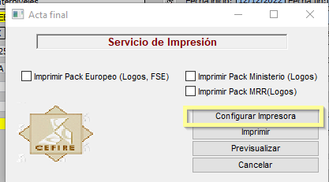

Qualificacions als participants assistents
Enviar al professor o professora lúltima setmana abans de finalitzar l'acció formativa la plantilla full de càlcul CODI_ACTA_PONENT.xlsx [Descàrrega d'arxiu] perquè pose els Aptes i No Aptes, el motiu dels No Aptes i la retorne en document pdf (imprimeix la primera fulla o les dos fulles) CODI_ACTA_PONENT.pdf amb firma digital.
Motius més comuns de No Aptes:
- Renuncia
- Baja justificada
- Asistencia inferior al 85% (modalitat presencial)
- No realiza ninguna actividad
- No realiza las actividades completamente
- etc.
Quan els formadors ens passen les qualificacions caldrà introduir-les a GESFORM.
Entrar a l’edició on volem posar les qualificacions als participants. Anar a Mis Ediciones – Ver i entrar a l’edició.
Anar a Extintor – Participantes Edición
Per defecte tots els participants estan en APTO per tant només caldrà canviar a NO APTO als participants que no han superat el curs. Cerquem al participant que volem canviar a NO APTO i cliquem a la fitxa.
Una vegada en la fitxa canviem la qualificació a NO APTO i li donem als tres puntets per triar el motiu del NO APTO.
De la finestra que s’obri triem el motiu i li donem a la fletxa verda – Apliquem i acceptem.
Finalment per que quede el motiu cliquem al requadre de baix dels tres puntets. I apliquem i acceptem.
Al finalitzar ja podem anar a Informes → Acta Final i descarregar esta acta en pdf (CODI_ACTA_FINAL.pdf) perquè l'Assessor o Assessora puga firmar digitalment auqest document.

A més, es necessari omplir:
- Informe, CODI_CuadroTexto.docx [Descàrrega d'arxiu]
- Modelo Ficha de Seguimiento, CODI_FSE_FichaSeguimiento.docx [Descàrrega d'arxiu]
- Full de signatures en modalitat presencial escanejades en un únic document, CODI_FULLSIGNATURES.pdf